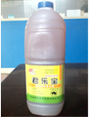
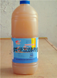
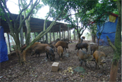
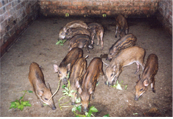
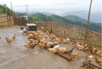
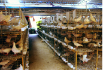
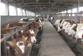
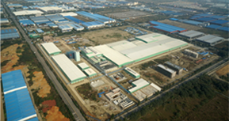
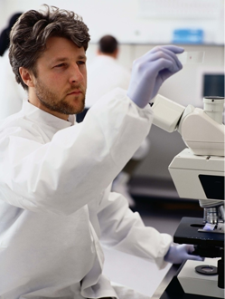

技术专区
Technology area


如何使用液体益生素
今天是网络高速发展的时代，网络缩短了时空距离，您足出户轻点鼠标就可找到好产品。网上购买济南益生素产品最担心的就是受骗，舜和农牧采购顾问提醒您网上购买济南益生素时应注意
查看详情>>
客户案例Customer case
-

野猪养殖
技术先进，针对国内毛皮动物营养需要，减少饲料损耗，降低饲料成本。
-

养猪场
最新的缓释工艺，精心调配而成，满足毛皮动物皮毛生长的各种营养需求。
-
 鸽子养殖
鸽子养殖
营养更全面，减少或杜绝营养代谢病的发生，增强其免疫力及抵抗力。
-

养鸡场
技术先进，针对国内毛皮动物营养需要，减少饲料损耗，降低饲料成本。
-

养鸽场
最新的缓释工艺，精心调配而成，满足毛皮动物皮毛生长的各种营养需求。
-

肉牛养殖
营养更全面，减少或杜绝营养代谢病的发生，增强其免疫力及抵抗力。
走进舜和
Into the Shunhe

舜和农牧发展有限公司坐落于经济高速发展的山东省会——泉城济南。公司工业园区紧邻灵岩寺风景区，环境优美，交通便利，距离104国道300米，京福高速500米。公司占地面积20000平方米，建筑面积5000平方米。拥有国内领先的研发试验设施和微生物发酵、饲料生产、蛋品加工三套生产流水线。
舜和资讯
Shunhe Information

-
营销实战培训
中国畜牧电商网络营销实战培训在济03-26 -
抗生素使用
抗生素滥用在畜禽养殖中的危害03-24 -
益生素
养殖中鸡脱肛和啄肛的解决方案01-08 -
肠常好
降低畜禽舍氨气危害的主要措施12-22 -
公司资讯
热烈庆祝济南舜和农牧2014年第三季度网络营销会11-18